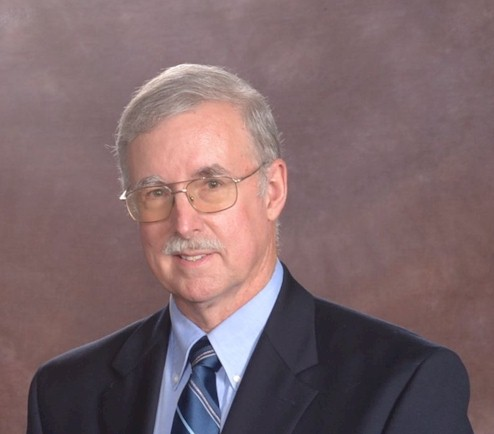
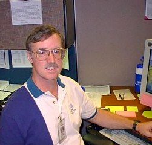

BHS 1967 Class Member
Charles Ray
 1967 |
 2017 |
|  2002 |
| 1967 |
 2017 |
|  2002 |
Before returning to California, I entered Northwest Missouri State University as a Senior where I earned a Bachelor's degree in Sociology and Psychology.
Following college, I moved to Palm Springs, California where I went to work for GTE as a Telephone Installer/Repairman and later as a Central Office technician. It was in Palm Springs that I met and married my lovely wife, Sally.
Some years later, I was offered a job at the GTE National Network Operations Center in Dallas, Texas where I monitored the company's electronic and digital switches. Shortly thereafter, I became a corporate instructor and taught various technical subjects to GTE personnel. Finally, while still in Texas, I became a System Administrator for the many Unix servers used for monitoring GTE/Verizon's land and wireless switching equipment.
Thanks to some careful planning, I was fortunate enough to be able to retire early, at age 52.
Sally and I are still happily retired and living in Poway, California, near San Diego.